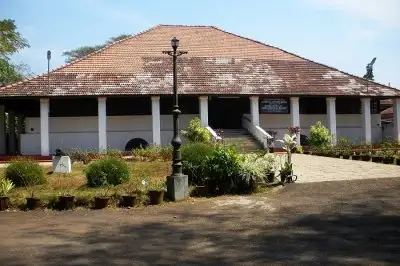
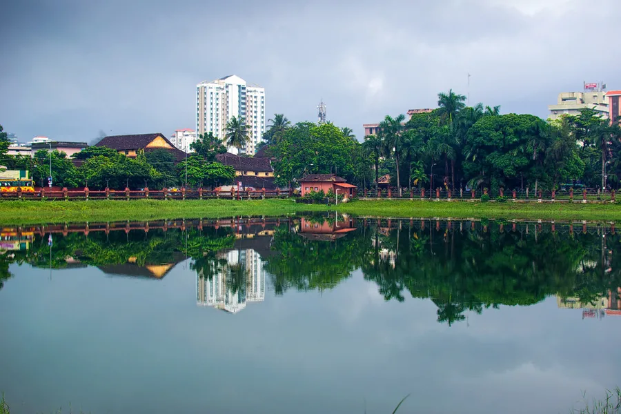

Kozhikode

Kozhikode also known in English as Calicut, is a city along the Malabar Coast in the state of Kerala in India. It has a corporation limit population of 609,224[6] and a metropolitan population of more than 2 million, making it the second largest metropolitan area in Kerala and the 19th largest in India.
Top Tourist places in Kozhikode
Pazhassi Raja Museum And Art Gallery Beach
For all the history lovers, Calicut is the perfect place to be. The Pazhassi Raja Museum and Art Gallery is one of the best places to visit in Calicut.
Named after the famous ruler Pazhassi Raja who fought the British with the help of tribes, the museum displays a variety of monuments, mural paintings, and old coins.
Kozhikode Beach

Situated on the Malabar coast and endowed with natural beauty, Kozhikode beach should be a must in the itinerary of your visit to the city. This beach is renowned for the sunsets that tourists throng here to enjoy. Though the water is muddy and not suitable for swimming, still the stunning view of the Arabian Sea that the lighthouse offers more than compensates for the shortcoming
Mananchira
Previously known as Mananchira Maidan, this place held many football matches. Mananchira scores high as one of the places to visit in Kozhikode.
This place provides tranquility to the visitors which is much sought after as one wants to escape the chaotic city life. It is a beautiful park covered with lawns, traditional buildings, a musical fountain, and an open-air theatre. This park is built around a man-made lake known as Mananchira lake.